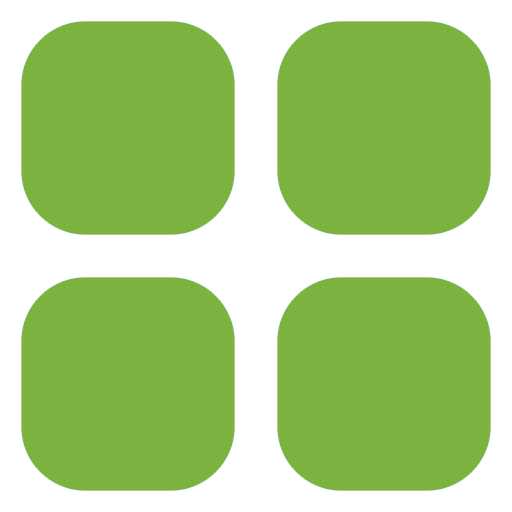

Início

Hectare

Subárea

Histórico
Histórico
Indicadores
A sua plantação esteve 28 dias com uma umidade do solo ideal
A 4ª semana do mês teve a umidade do solo mais baixa registrada (65%)
A umidade do solo média na semana foi 70%
Umidade do solo ao longo dos meses
Dias com variações na umidade do solo
Últimos alertas 
02/05/2025 - Ha 1/Subárea 2
15/01/2025 - Ha 1/Subárea 2
09/01/2025 - Ha 2/Subárea 1
20/12/2024 - Ha 1/Subárea 2
15/12/2024 - Ha 1/Subárea 3
01/12/2024 - Ha 3/Subárea 1
Preço da batata inglesa no mercado
R$ 3,99/kg